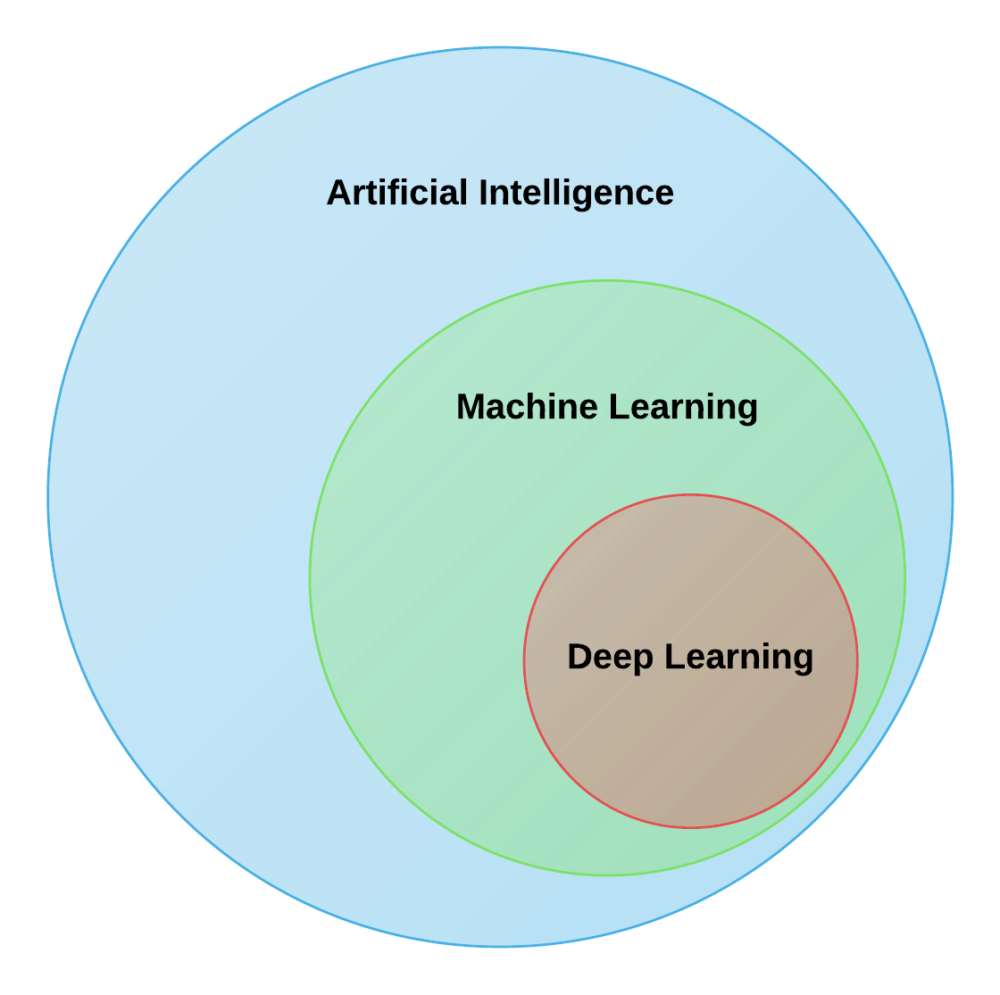
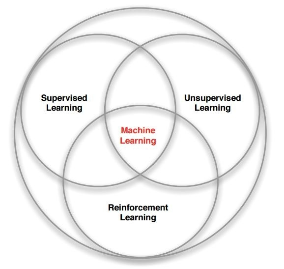
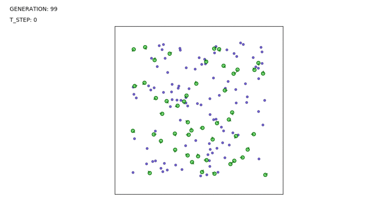

Machine Learning
nishanpantha@gmail.com
What This Chapter Is About
- Learning and Concepts
- Why Machine Learning
- Types of Learning
- Neural Networks
- Genetic Algorithm
- Fuzzy Learning
- Boltzman Machines
Machine Learning
One of ways to achieve AI

AI Hierarchy
Learning
What is Learning
- Acquiring new knowledge
- Modifying existing knowledge
How
- Changes
- Generalization
- Improvement
Different Learning Methods
Inductive Learning
Deductive Learning
Inductive Learning
Find patterns from data
Deductive Learning
Derive conclusion from facts
A=B,B=C -> A=C
Learning
Rote Learning
Memorization
Rote Learning
Learning by Analogy
Explanation-Based Learning
Learning by observing and analyzing human solutions to specific problems

After lerning, go directly from facts to solution
Prototypical EBL Architecture
Explanation-Based Learning
- Needs many examples
- Broken Explanations?
Learning from Examples
- Inductive Learning
Inductive Learning
Inductive Learning
- Find Patterns


Learning Framework
Environment
- Nature and Quality of Information
Information Level
- High Level -> Abstract -> Broad Class of Problems
- Low Level -> Details -> Single Problem
Information Quality
- Noise Free
- Reliable
- Ordered
Knowledge Base
- Expressive
- Modifiable
- Extensibility
Genetic Algorithm
Modeling Search as Evolution
- Crossover
- Mutation
- Survival of the fittest
- Survival of the most diverse
Rocket Evolution
Simple Evolving Organism
- Heredity
- Variation
- Selection

General Algorithm
A) generate initial population
B) evaluate fitness of all
C) select fitter population for crossover
D) cross-over
E) mutate
F) evaluate fitness of offspring
Loop while reaching desired fitness
Roulette Wheel
Disadvantage
- Less efficient in terms of speed of convergence
- Tendency to get stuck in local maxima
Fuzzy Learning
Crisp
Fuzzy
Fuzzy Rule-Based System
Fuzzy Logic Operators
Fuzzy Logic Operators
De-Fuzzify Result
Research